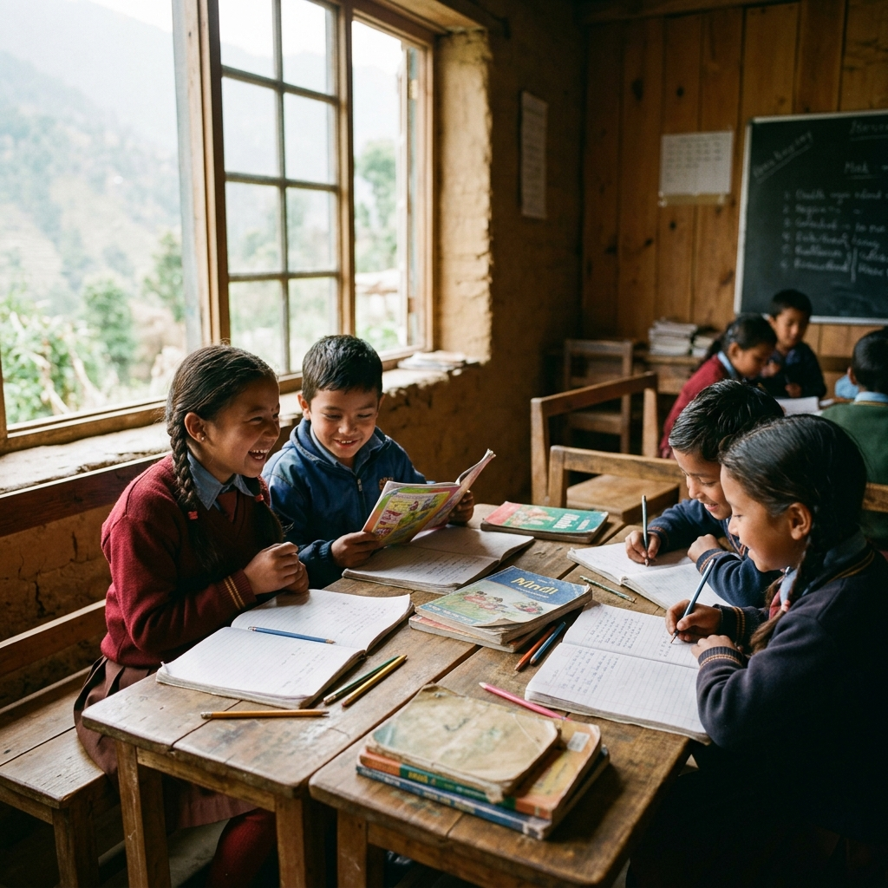

Education
Seeds of Learning
Community-run learning centers in 85 villages, where children don't just study — they discover who they can become. Our curriculum blends traditional knowledge with modern skills, honoring the wisdom that already exists.